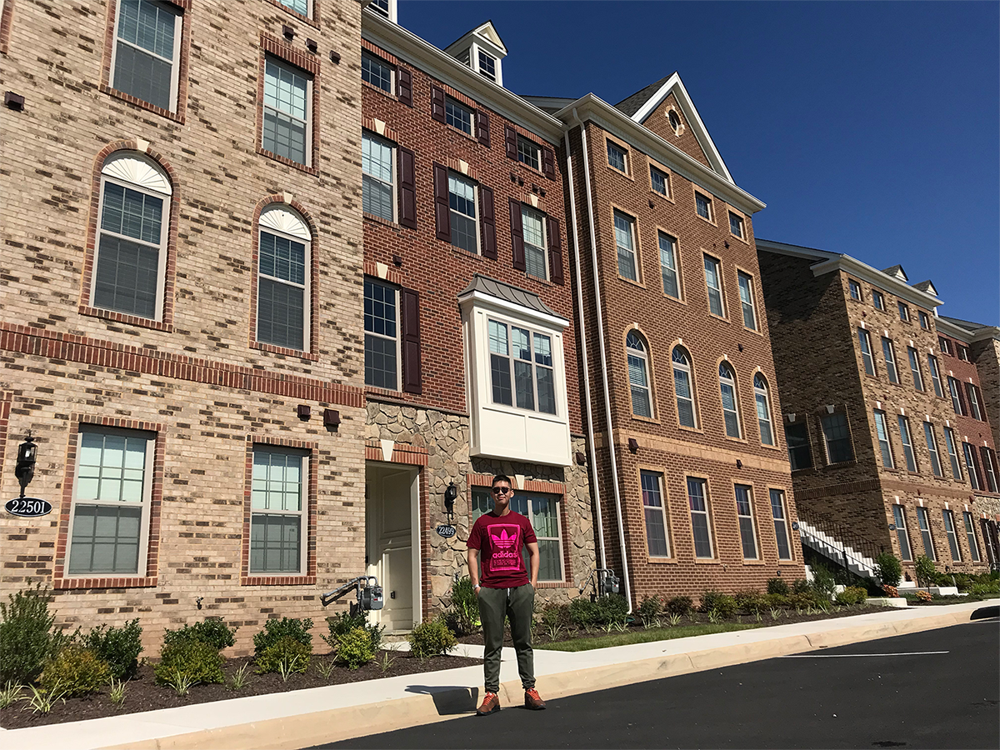
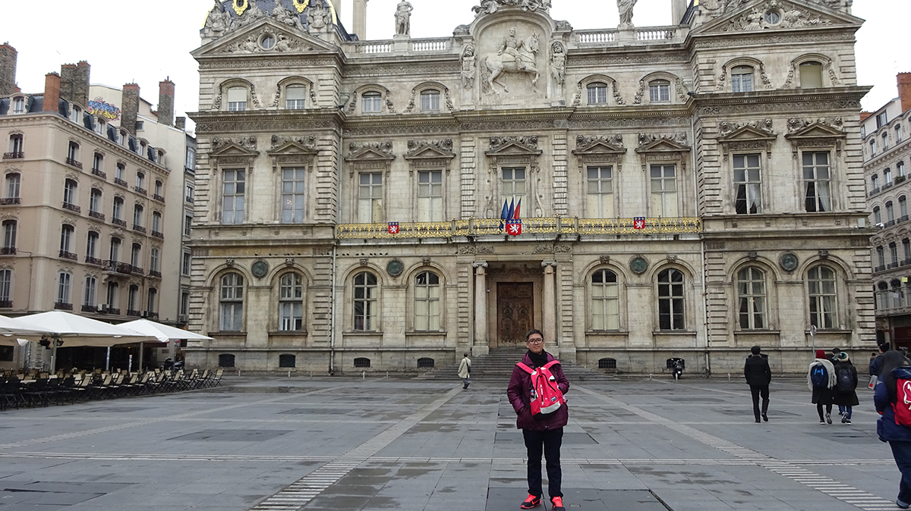

Qui je suis?
Au moment où j'écris ce web, je suis étudiant en 2ème année (j'ai vingt ans) en Informatique à l'université des sciences. Mon nom est Vũ, Mon prénom est Nguyễn Phương Huy, mais tu peux m'appelle Bill. j'adore la langue, je peux parler trois langues : français, anglais et vietnamien. Je lis souvent les livres francais de technoloqique (j'adore des technologiques) parfois, je lis les livres anglais parce que mon anglais n'est pas bien. J'adore le decouvert des nouveaux technologiques, alors je lis beaucoup les livres, de plus je participe les courses en ligne pour améliorer mes connaissances. J'aime les arts, je peux jouer au piano, mon pianiste préfére est Richard Clayderman, je joue beacoup ses morceaux : Nostagia, Lettre À Ma Mère, La Vie En Rose, notamment c'est Ballade Pour Adeline. Pour découvrir la vie, le monde, il me faut avoir une bonne santé, alors je vais à la gymnastique quatre jour par semaine, après l'heure de travail pour rester en forme, éviter les maladies comme l'obésite, le cardio-vasculaire,etc. D'après moi, la santé est très important et nous ne la pouvons jamais gagner par l'argent. En plus, Mes passions sont le conception et la photographie, ils sont les raisons que je veux devenir un développeur de WEB. Je veux concevoir un site de web, créer les produits de communication. Ils me permettent créer n'importe quoi. Vous pouvez voir mes compétents-là. Maintenant, je vous raconte mon histoire, c’est “Comment j’apprends la langue?”
Comment j'apprends le français?
Quand j’étais 6 ans, j’étais première class de bilingue de l’école primaire, C’est le première fois j’ai pu parler le français. Mais, je l’ai détesté, je ne l’ai voulu pas apprendre, néanmoire j’ai appris encore le français parce que mes parents en ont voulu. Alors, mon niveau français est zéros, jusqu'à j'étais en première année à l’université(septembre 2017), je m’ai changé entièrement, quand je choisis ce programme(je pense que c'est mon destin), Erasmus entre l'université des sciences à HCM ville et l'Université Claude Bernard Lyon 1. Madame Lệnh Anh m'a donnée le passion avec le français. En ce moment-là, je comprends que "Pourquoi mes parents me veulent apprendre à la classe bilingue." Donc, j'ai été effort pour gagner le DELF B2 avec le but qui est étudier à Lyon. (à HCM ville, le DELF organise l'examen 3 fois par an, mai, septembre et novembre) J'ai fais l'examen le DELF B1 en mai 2018, je suis tombé le B1, C'est une échec très graves pour moi, peut-être j'ai perdu tout le volonté à cause du résultat. Mais non, j'ai été revenir et plus fort qu'hier. Je suis été déterminé gagner le B1 et B2 en novembre 2018. à chaque jour, j'ai fais tout les exercices, les devoirs de CE, PE, CO. Quand j'ai été libre, j'ai écouté toujours le français sur le TV5, les chaines français sur Youtube, j'ai mangé avec le français, j'ai dormi avec le français et même j'ai fais du toilette avec le français, le français autour de moi. J'ai devu gagner le B1 et B2 en novembre 2018, mais peut-être le gagne B2 en novembre 2018 pour moi, c'est impossible ! je suis très jeune et inexpérimenté. Je pense que vous avez su mon résultat. J'ai passé le B1 mais je suis tombé le B2. C'est mon choc, parce que je m'ai pensé que j'ai pu avoir le B2, je m'ennuie moi-même. je n'ai voulu plus apprendre le français. Donc, je l'ai laissé. Février 2019, je sais que le B2 est mon clé pour étudier à Lyon, je n'ai plus eu le passion avec cet apprentisage, mais, j'essayerais passer le B2. Je m'ai inscrit une course avec Monsieur français qui s'appelle Vincent Graham et pendant 3 mois, il m'ai aidé beaucoup, m'ai donné les expériences, les cultures et notamment c'est l'intéressant du français. En résultat, après beaucoup d'échec j'ai gagné le B2 en mai 2019. C'est très magnifique, il est ma histoire d'effort et persistant. Suivre tes passions par tout tes capacités, efforts et ne jamais abandonner. Tu vas atteindre ton objectif! De plus, quand je sais une autre langue ce qui signifie je sais un autre culture, en plus j'adore le voyage. Aller à mon voyage!
Mon CV
+ Delf B2 (Mai 2019 - Université de pédagogie de Hô Chi Minh Ville)
Domino's Pizza - HCM ville (janvier 2019 - février 2019)